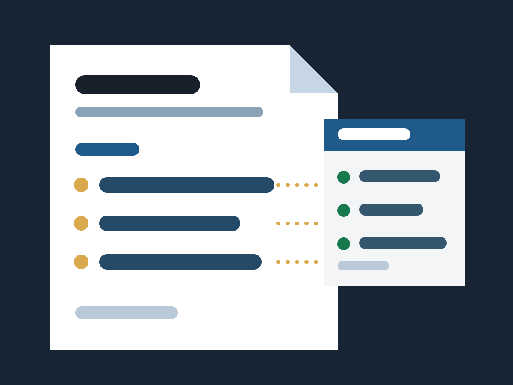

Tailor the resume. Keep every claim honest.
Sartor turns the evidence you already have into a resume for one role, then flags anything the sources do not support. Your files stay in a local project; the model is the one you configure.

Download the desktop app
macOS builds are signed and notarized. Windows and Linux builds are unsigned for now. First launch prepares a private Python runtime, so give it about a minute.
How Sartor works
Bring your evidence
Add an existing resume and other sources in PDF, DOCX, HTML, Markdown, text, or JSON Resume form.
Tailor to one role
Sartor selects and rephrases supported experience for the job, optionally using framework language without printing a level claim.
Verify before you send
Every generated bullet keeps its source evidence. Weak and unsupported claims are flagged for your decision—not quietly polished into facts.
Private by design
No account, sync, or telemetry. Sartor reads and writes a plain project folder you own. Use local Ollama, another OpenAI-compatible endpoint, or Anthropic; API keys entered in the desktop app stay in your OS keychain.
Prefer Python?
The same engine is available as a package and command-line tool.
uvx --from "sartor[all]" sartor --help
# or install it
pip install "sartor[all]"